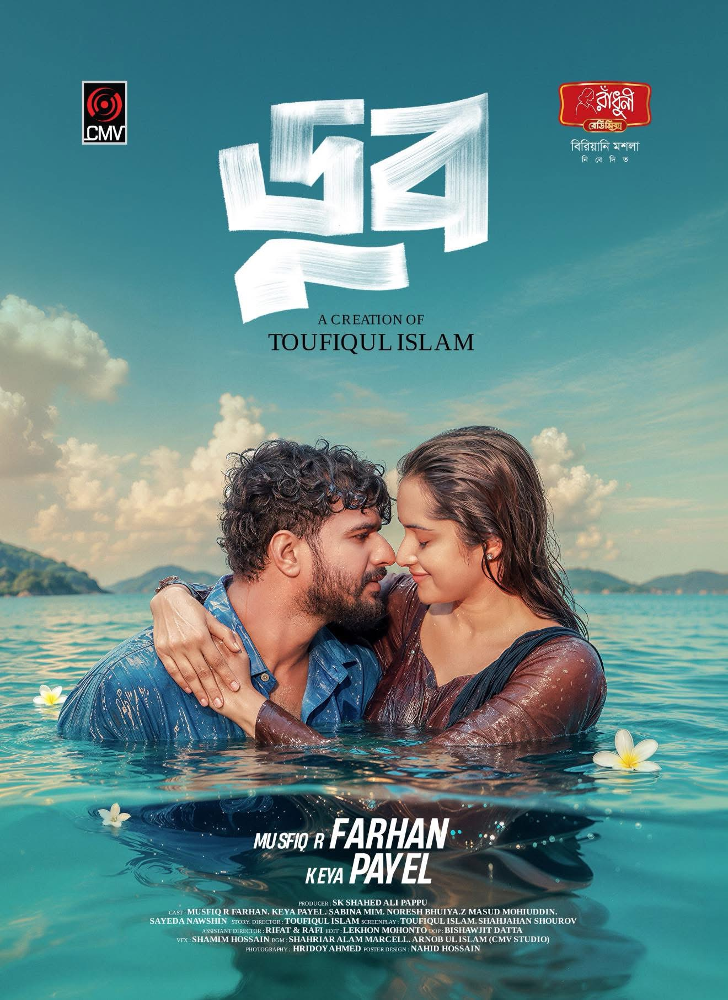
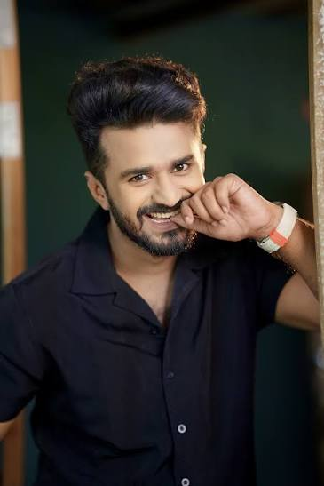
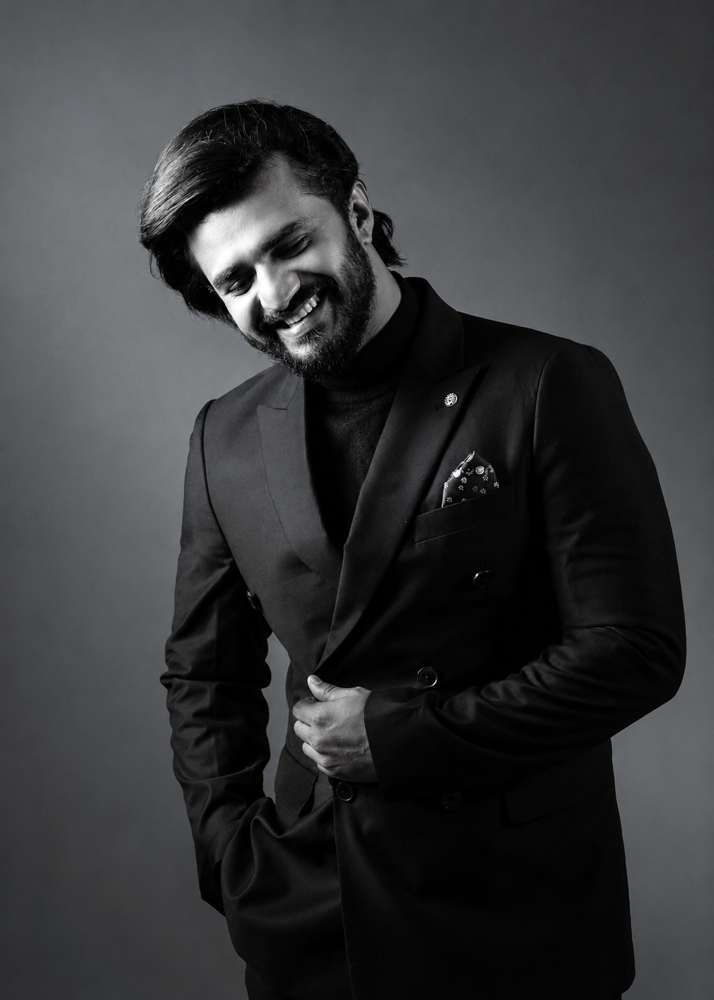
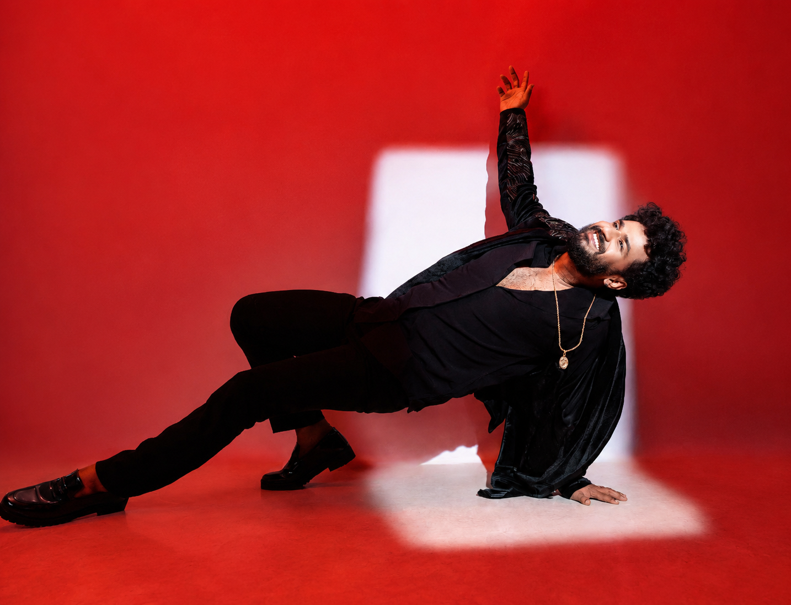

FeaturedLatest release
Doob
A new story is taking shape. Discover the latest project, its collaborators and the feeling behind the frame.
Musfiq R. Farhan · Bangladesh
Find in the archive
Actor · Storyteller · Bangladesh
A cinematic archive of performances, people and the next scene.

About Musfiq R. Farhan
Musfiq R. Farhan is a Bangladeshi actor, radio jockey and content creator known for bringing intimate character stories to natok, television and digital audiences.
Read the biography →01 / In the spotlight
A living collection of work, announcements and moments — updated from the studio.

FeaturedLatest release
A new story is taking shape. Discover the latest project, its collaborators and the feeling behind the frame.
02 / Watch
03 / Journal
Stories, announcements and the details between the scenes.
04 / Gallery
Posters, portraits and behind-the-scenes moments curated by the studio.



Archive index
Every category has its own crawlable archive page, permanent content links and managed gallery context.
Subcategories: Recent releases New natok Short clips Behind the scenes Eid special
The MRF standard
A transparent editorial system for first-hand work, verified links and clear publishing history.
First-hand creative notes, performances and studio moments are presented as part of the official archive.
Every published item has a clear category, author, date, summary and descriptive media metadata.
Identity links connect the official site to the supplied Facebook, Instagram, IMDb, YouTube, WhatsApp, Crunchbase and LinkedIn profiles.
Audience notes are moderated, external claims stay editable, and the admin console keeps publishing ownership visible.
The person behind the frame
Musfiq R. Farhan is a Bangladeshi actor, radio jockey and content creator whose work moves between intimate character stories and the energy of contemporary entertainment.
This official space brings the work together: new natok, films, posters, notes from the set and the people who keep watching.
From the audience
Your words could be the next story here.
For work, press & collaborations